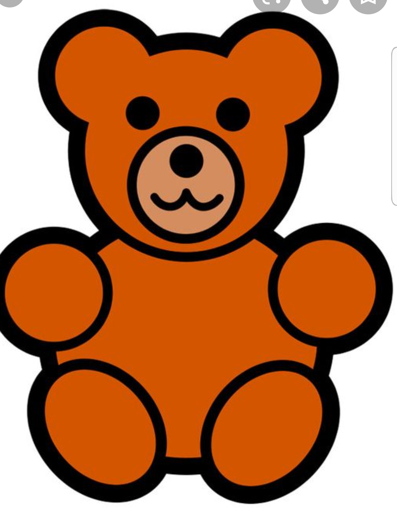

Mijn naam is Bruno Lemos, ik heb Elektrotechniek gestudeerd en werk in de Elektrotechniek branche als Service Engenieur. In mijn vrije tijd breng ik door met mijn familie, les de Bijbel, speel graag voetbal, leer piano spelen en maak ook daarnaast muziek, en af toe speel ik FIFA met mijn zoon.
